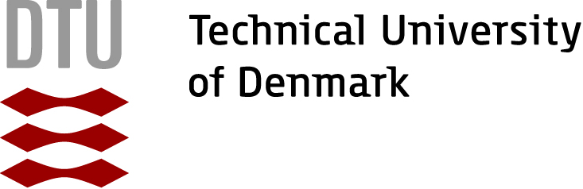

I am a first year Ph.D. student at the National and Kapodistrian University of Athens and Archimedes/Athena RC, working on theory-driven Machine Learning models, including Transformers and Neural Networks. I am fortunate to be supervised by Christos Tzamos.
Previously, I conducted research at DTU, CTU, Athena RC, and Max Planck, where I specialized in Machine Learning, Optimization, and Natural Language Processing. I also have a solid Statistical and Mathematical background acquired through master's and bachelor's studies at the University of Oxford and University of Patras. I aim to continue expanding my knowledge and pursue a research career.
Before all that, I was lucky to grow up in the village of Agioi Pantes on Zakynthos, an island in Greece; a place full of natural beauty and history.
- Machine Learning
- Large Language Models
- Optimization
- Combinatorials
Short Bio
Studies:
-
PhD in Machine Learning

-
Master in Statistics

-
Bachelor in Mathematics

Research Assistant:
- RA at DTU in Copenhagen 
-
RA at CTU in Prague

-
RA at Athena Research Centre

-
RA at Max Planck

News
- Dec. 2024. Received an infrastructure grant from GRNET for access to AWS high-performance computing systems.
- Nov. 2024. I started a Ph.D. at the NKUA in theory-based ML under the supervision of Christos Tzamos.
- Sept. 2024. Participated in the MALT conference focused on learning theory.
- Jul. 2024. Received a scholarship for Ph.D. studies from Archimedes/Athena RC.